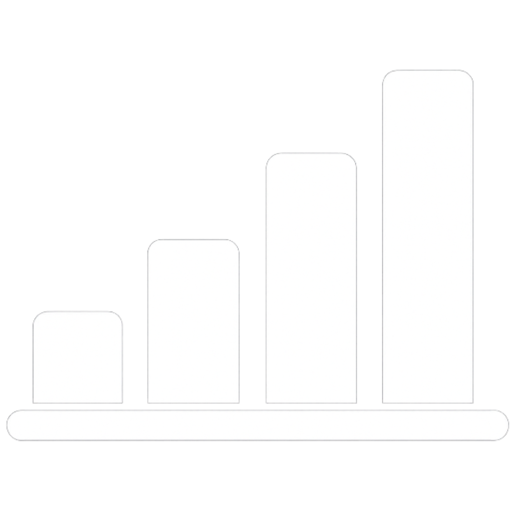

AGROÓRBIT
Monitoramento de Queimadas
no Bioma Caatinga
Uma plataforma desenvolvida para ajudar pequenos agricultores do Semiárido brasileiro. O AgroÓrbit usa dados gratuitos do INPE, CHIRPS e INMET para monitorar queimadas e condições climáticas em 130 microrregiões do Bioma Caatinga, gerando alertas simples e recomendações de plantio baseadas em 3 anos de dados reais.
Global Solution 2026
Principais Indicadores
Esses quatro números representam a média dos 3 anos analisados (2022, 2023 e 2024). São extraídos de fontes científicas reais e mostram o padrão consolidado da seca e das queimadas na região.
Queimadas e Vegetação
Os gráficos mostram a média mensal dos anos analisados para o Bioma Caatinga. O padrão é consistente: a partir de junho os focos aumentam progressivamente, atingindo o pico crítico em setembro.
Correlação moderada e negativa entre índice de risco e focos de queimadas nos anos analisados.
Outubro é o mês com maior volume de focos (127k média). Setembro tem o maior índice de risco médio (0.499) nos 3 anos analisados.
Fevereiro apresentou o menor índice de risco e o menor número de focos nos anos analisados.
Dados Climáticos
Condições médias de cada mês baseadas em 3 anos de dados reais. Toque em qualquer mês para ver todos os detalhes.
Monitoramento Mensal
Cada mês recebe um nível de alerta baseado na média dos 3 anos analisados. Os dados consolidados mostram o padrão real da região, ajudando o agricultor a se preparar com antecedência para os períodos de risco.
Calendário de Plantio
Clique em qualquer mês para ver os dados detalhados. As cores indicam se as condições são favoráveis ao plantio com base em 3 anos de dados reais.
Clique em um mês no calendário acima para ver as microrregiões recomendadas e as não recomendadas para plantio naquele período. Baseado no índice de risco climático e precipitação média de 2022, 2023 e 2024.
Comparativo 2022 · 2023 · 2024
Veja os dados dos três anos lado a lado ou explore cada ano individualmente. O padrão se repete: setembro é sistematicamente o mês mais crítico, o que comprova a necessidade de um sistema de alerta preventivo. Análise realizada em 2026 com os dados disponíveis de 2022, 2023 e 2024.
Sobre o AgroÓrbit
Uma plataforma de monitoramento espacial de queimadas e risco climático no Bioma Caatinga, desenvolvida para democratizar o acesso à inteligência de dados para pequenos agricultores do Semiárido.
A Caatinga é o único bioma exclusivamente brasileiro. Ocupa cerca de 11% do território nacional, abrange 9 estados (AL, BA, CE, MG, PB, PE, PI, RN e SE) e abriga 28 milhões de pessoas.
Apesar de sua importância socioambiental, é historicamente menos monitorado que outros biomas. Em 2024 a Caatinga registrou aumento de 38% nos focos de calor em relação ao ano anterior, em meio à seca prolongada do Sertão.
Pequenos agricultores do Semiárido não têm acesso a sistemas de monitoramento sofisticados. O AgroÓrbit usa dados públicos e gratuitos para entregar inteligência prática a quem mais precisa.
A plataforma cruza dados de focos do INPE, chuva do CHIRPS e clima do INMET para gerar um índice de risco mensal por microrregião, com linguagem simples e alertas claros.

O AgroÓrbit ajuda pequenos agricultores do Semiárido a proteger suas safras antecipando períodos de seca e queimadas, contribuindo para a segurança alimentar no Nordeste.
Uso de dados de satélite e Big Data para gerar insights acionáveis sem custo para o usuário final, democratizando tecnologia espacial para pequenos produtores rurais.

Registro histórico e em tempo quase real das condições climáticas que aumentam risco de incêndios na Caatinga, apoiando ações preventivas de conservação ambiental.

Proteção da Caatinga, bioma endêmico e exclusivamente brasileiro, contra a degradação por fogo e desertificação. O monitoramento contribui para a preservação da biodiversidade do Semiárido.
O sistema de alertas pode avisar o agricultor com até 30 dias de antecedência antes do pico crítico de setembro e outubro.
Todos os dados utilizados são públicos e gratuitos. Qualquer agricultor com acesso à internet pode usar a plataforma.
As 130 microrregiões do Bioma Caatinga em 9 estados são cobertas pelo monitoramento, alcançando pequenos agricultores em todo o Semiárido.
O AgroÓrbit não coleta, armazena ou processa nenhum dado pessoal de usuários. Toda a plataforma opera exclusivamente com bases de dados públicas e gratuitas (INPE BDQueimadas, CHIRPS UCSB, INMET e IBGE), sendo que nenhuma dessas fontes contém informações de identificação pessoal.
A plataforma não possui formulários, cadastros, login ou qualquer mecanismo de rastreamento de usuários. Nenhum dado pessoal é exigido ou capturado.
Toda a inteligência e as visualizações da ferramenta rodam 100% no navegador do usuário. Nenhuma informação é enviada ou salva em servidores externos.
Utilizamos apenas dados climáticos e geoespaciais abertos. Como não há cruzamento com informações de pessoas físicas, o projeto é totalmente isento de riscos de privacidade.
Modelo Preditivo
Modelo de Machine Learning treinado para prever o nível de risco de queimadas com base nas condições climáticas. Algoritmo Random Forest com validação Leave-One-Out nos 36 meses analisados da Caatinga.

Ajuste os valores climáticos abaixo e veja qual nível de risco o modelo prevê para aquele mês.
O clustering K-Means (não supervisionado) identificou automaticamente os mesmos 4 grupos de risco do sistema de alertas, sem nenhuma informação prévia sobre os níveis. Isso valida que os padrões climáticos da Caatinga são suficientemente distintos para serem detectados por Machine Learning.
A análise de tendência mostra crescimento consistente de focos em setembro: +1.065 focos/ano em média. Se a tendência se manteve em 2025, setembro pode ter registrado cerca de 10.426 focos. Nota: dados de 2025 não estavam disponíveis nas fontes no período de coleta do projeto (desenvolvido em 2026).
Técnica de Machine Learning que cria 100 árvores de decisão diferentes e faz todas votarem juntas. A resposta com mais votos vence. Funciona como perguntar a opinião de 100 especialistas ao mesmo tempo, o que reduz erros.
Com apenas 36 amostras, o LOO é a validação mais adequada. O modelo treina em 35 meses e testa no mês restante, repetindo 36 vezes. Garante que cada amostra seja testada sem ter sido vista no treino.
São os dados que o modelo recebe para fazer a previsão: mês do ano, precipitação (CHIRPS), temperatura e umidade (INMET), sem usar focos como entrada. Chuva e temperatura da NASA. Os focos de queimadas ficam de fora porque o objetivo é prever o risco antes deles acontecerem.
Com apenas 36 meses de dados o modelo ainda é limitado. O desvio padrão alto mostra que alguns meses são mais difíceis de prever do que outros. Com mais anos de dados no futuro, a acurácia tende a melhorar.
Fontes de Dados
Todos os dados utilizados no AgroÓrbit são públicos e gratuitos. Abaixo estão as seis fontes que alimentam a plataforma, com detalhes técnicos sobre cada uma.



